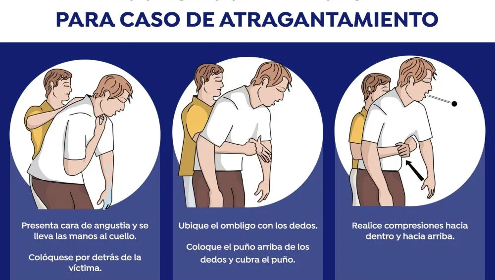

Home
Contacto
Procedimientos para la reanimación cardiopulmonar
 Maniobra de Heimlich
 Procedimientos para la reanimación cardiopulmonar Procedimientos para la reanimación cardiopulmonar
Procedimientos para la reanimación cardiopulmonar Procedimientos para la reanimación cardiopulmonar